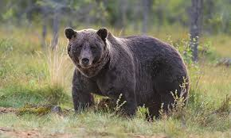
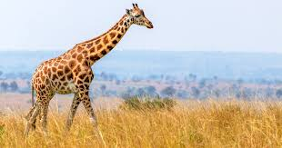
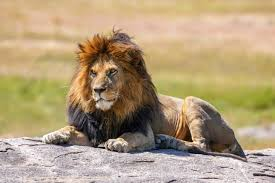
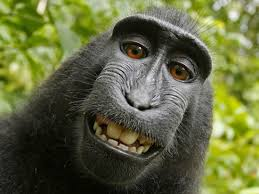
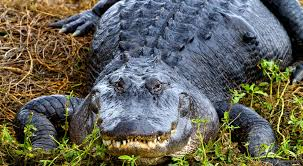

Bears

Bears are large, powerful mammals with strong limbs, sharp claws, and keen senses. Found across multiple continents, they are mostly omnivorous and solitary, except for mothers with cubs. Some hibernate in winter, and despite their size, they can run fast and climb well.
More Info!
Giraffes

Giraffes are the tallest land animals, native to Africa. They have long necks, spotted coats, and strong legs, helping them reach high tree leaves. Primarily herbivores, they feed on acacia leaves. Giraffes are social animals, living in loose herds. Despite their size, they can run fast and use their powerful kicks for defense.
More Info!
Lions

Lions are large, powerful big cats native to Africa and parts of Asia. Known for their golden coats and majestic manes, they live in social prides, unlike most big cats. Lions are apex predators, hunting in groups for prey like zebras and buffalo. They are strong, fast, and rely on teamwork to dominate their habitat.
More Info!
Monkeys

- Cookie
- Earl
- Banana Pudding
Monkeys are intelligent, agile primates found in forests, jungles, and grasslands worldwide. They have grasping hands, long tails, and strong limbs, helping them climb and swing through trees. Monkeys are social animals, living in troops and using vocalizations and gestures to communicate. They are omnivores, eating fruits, leaves, insects, and small animals.
More Info!
Alligators

Alligators are large, semiaquatic reptiles found in the U.S. and China. They have powerful jaws, armored bodies, and strong tails, making them skilled hunters. Mostly carnivorous, they eat fish, birds, and mammals. Alligators are cold-blooded and rely on the sun for warmth. They are territorial but can be social in groups.
More Info!